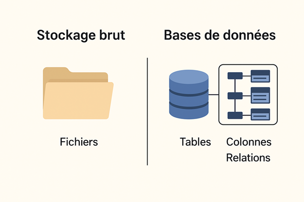

Chapitre IX : Les bases de données
🗄️ 1. Qu’est-ce qu’une base de données (BDD) ?
- C’est un logiciel qui organise les données pour qu’on puisse les stocker, les rechercher et les modifier
facilement
- Contrairement au stockage brut (fichiers sur un disque), la base de données structure les infos en tables,
colonnes, lignes (comme un Excel super-puissant)
📊 2. Types de bases de données
- 🔹 Relationnelles (SQL)
- Données organisées en tables liées entre elles
- Langage : SQL (Structured Query Language)
- Exemples : MySQL, PostgreSQL, MariaDB, Oracle
👉 Utilisées pour les sites web (WordPress, e-commerce, ERP)
- 🔹 Non-relationnelles (NoSQL)
- Données organisées sous forme de documents, graphes, clés-valeurs
- Plus flexibles, utiles pour le Big Data ou les applications temps réel
- Exemples : MongoDB, Redis, Cassandra
🧩 3. Analogie simple
- BDD relationnelle (SQL) = un tableur Excel : colonnes, lignes, relations entre feuilles
- BDD NoSQL = un dossier rempli de fiches : plus souple, mais moins structuré
🔑 4. Pourquoi c’est important ?
- Toute application (site, appli mobile, ERP) a besoin de stocker ses infos : utilisateurs, mots de passe,
produits, factures, logs…
- Une BDD bien optimisée → site rapide ⚡
- Une BDD mal optimisée → site lent 🐌 voire plantage
📡 Exemple concret
Tu te connectes à Amazon :
- Ton identifiant et mot de passe sont vérifiés dans la BDD
- Les produits que tu vois viennent de la BDD
- Ton panier est enregistré en BDD

Retour au sommaire